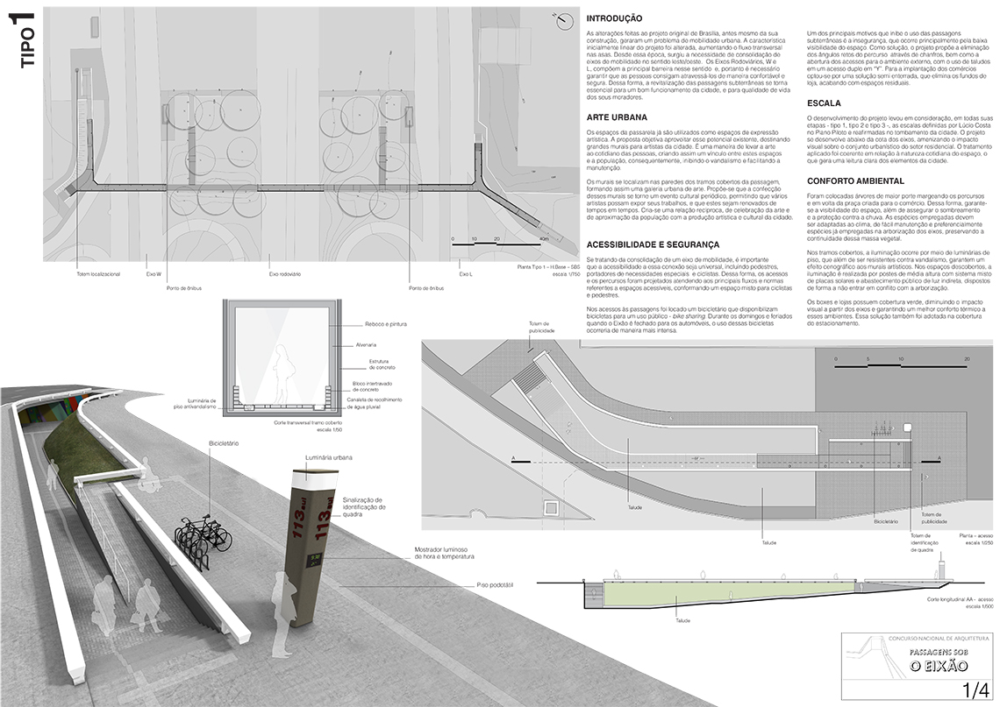
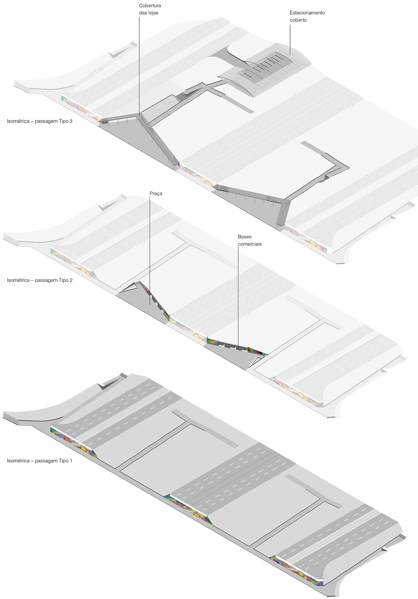

- In team with: A. Gallizio, H. Meuren, H. Rabello, J. Diel.
- Type: Competition
- Roles: Co-Author, Designer, Drafter, Presentation
- Year: 2012
Proposal for the national competition to revitalize Brasília's mains underpasses. The proposition consisted mainly on minimum intervention, since the whole site is a UNESCO Heritage Site. The intervention focused on given better ilumination and security to the space, integrate it with the local artists and develop a small commerce on the most frequented ones.

